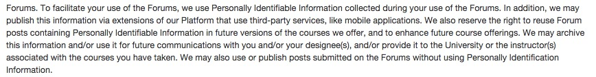

Edtech policies (part I)
In a previous post, I talked about some of the problems associated with data collection with no clear purpose. In this one, I want to compare two of the big players in edtech on a narrow point, that of comment posts and their associated privacy. This is partly done in response to Bill Fitzgerald's posts on edtech privacy policies, but also as a concerned parent looking a bit far out in the future.
On June 26th Google held an I/O developer conference. I was hoping, like many, some kind of announcement about mooc.org. Not much was said on that, but it was still an instructive watch of the efforts of Google in the MOOC space. I was particularly struck by a comment of Julia Wilkowski (leader in their MOOC project) following a question from the audience. The comment is at 28:35, if it does not play for you:
She informs us that no sophisticated analysis has been performed thus far on the Google MOOC forum posts. There are apparently two reasons: it is complicated, and they are required to delete all the posts after 60 days to comply with their privacy policy. Indeed, Google MOOCs fall under the global umbrella of the Google Privacy Policy, which seems to uniformly apply to all their products. The main reason for this number seems to be technical rather than anything else (the backup system is presumably very complex, extending all the way to physical tapes), since I couldn't find a reference to it in the Google Privacy Policy (and neither could other people, if you, well, google it).
A tad later, Peter Norvig talks about classifiers (similar to those used in the recent Facebook experiment that would make the news 3 or 4 days later), for instance to help determine when a student might be confused, a classic trick in intelligent tutoring systems. He immediately reminds us though:
But there still are a lot of privacy issues involved in what [..] information can you keep, how much can you tie the identity in the forum to the identity of the student, can you tie that to their identity someplace else, and the field as a whole has to come to grips with the privacy issues so we can share and learn what we want without violating privacy.
—Peter Norvig
Coursera is another big player in the market, with a rather different approach. In their Terms of Service and Privacy policy, one can find the following:
The most remarkable sentence here is: We also reserve the right to reuse Forum posts containing Personally Identifiable Information in future versions of the course we offer, and to enhance further course offerings. This sentence is very puzzling to me. What does it mean? The only logical explanation I can offer is that Coursera plans to repopulate forums in later iterations of the course with posts from a previous run, presumably one where there was more emphasis on moderating the course. Ask a dumb question once, and it will be asked again on repeat, in your name, in contexts you don't necessarily know. Share a bit too much of your great idea for a startup, in a context where you feel confortable, well, too bad: it might be reshared again, even if you delete your post at the end of a course (many MOOC students have the feeble illusion that this protects their intellectual property).
The Terms of Service also include the following, which is classically present in many platform disclaimers:

The Coursera Terms of Service include numerous such disturbing clauses, as detailed in this wonderful post from August 2012. That post is a very highly recommended read, since it details issues of free speech and academic freedom, a hot button those days. It also includes the following gem:
It is crucial that we pay close attention to the fine print, something unfortunately overshadowed by the immediacy and novelty of Web 2.0 solutions and the latest trends in brand management techniques.
I can only recommend this approach, but it has to be moderated by a quote given earlier in the piece:
Because Coursera mediates between instructor/university and user/student communication, we are dealing with at least four major relationships: user-Coursera, Coursera-instructor/university, user-Coursera-instructor/university, and vice versa. I am mainly focusing on the user-Coursera relation (terms of use and privacy policy), but it should be noted that these are really only separable at the analytical level. In reality, all of these relations are in play at any given time.
This leaves many unanswered questions, which are not easy to address. It requires access to other contracts, between the instructor, the university and Coursera itself.
Only one such contract between a university and Coursera has been discussed on a wide scale, the contract given to the University of Michigan. It was the object of a 2012 (antiquity in the domain of MOOCs) Chronicle of Higher Education article. It is based on a Freedom of Information request for the University of Michigan contracts. More recently, the UCSC Faculty Union has entered negociations with Coursera, that are detailed on its blog. From the outside, these seem very one sided and highlight differences with the University of Michigan contract:
In the Michigan contract, the instructor grants to COURSERA various rights FOR THE DURATION SUCH CONTENT IS OFFERED THROUGH THE PLATFORM (i.e., very limited transfer of rights). In our contract, in contrast, the rights are granted TO THE UNIVERSITY and this appears to be irrevocable and not connected to the hosting of the course on the Coursera platform.
In other words, the balance of the Coursera contract shifts towards the instructor at the University of Michigan, compared to at UCSC. In the latest Shangai rankings (for the little they are worth), Michigan was ranked 22nd while UCSC was 93rd. Bear in mind that Michigan joined earlier, which might also affect this complex bargaining equation.
A few other contracts have been put online, intentionally or not, and can be found by googling titles etc. I found eight in total, which can serve as evidence of subtle shifts of the Coursera strategy, and also segmentation according to the characteristics of the universities involved (European vs. American, public vs. private, etc). Since many of those contracts are locked under Non Disclosure Agreements, and this has already become a union issue elsewhere, I can only encourage other academics to push for openness of those contracts at their own institutions.
(For a cool application of machine learning to the process of teaching, look also at the video around the 4:30 mark. Google seems to focus there on content rather than users, and to extract values from the student contributions rather than their private data. They effectively intend to crowdsource smarter compilers.)
(I want to thank Ignacio Despujol Zabala for letting me know about Google I/O.)
Comments
Comments powered by Disqus